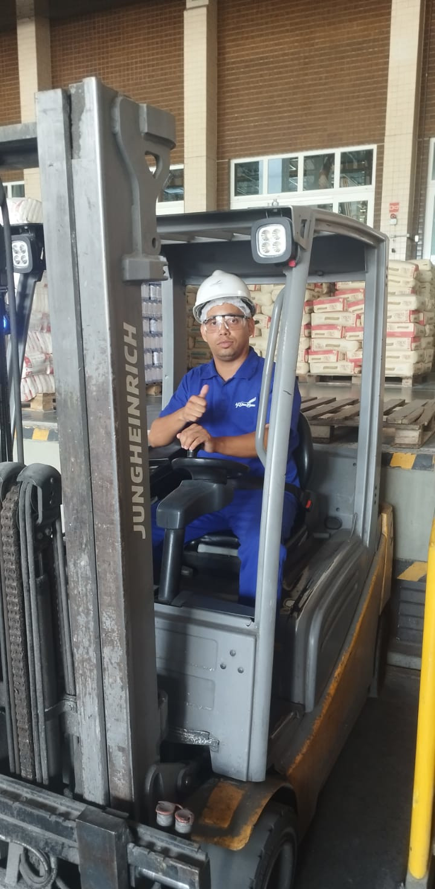
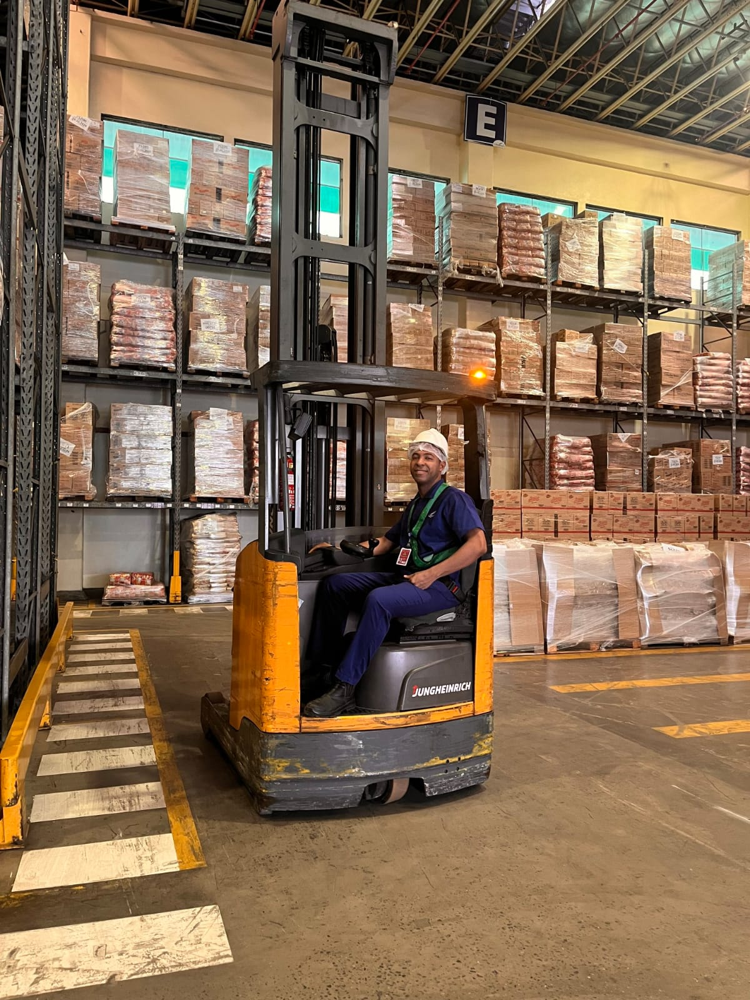
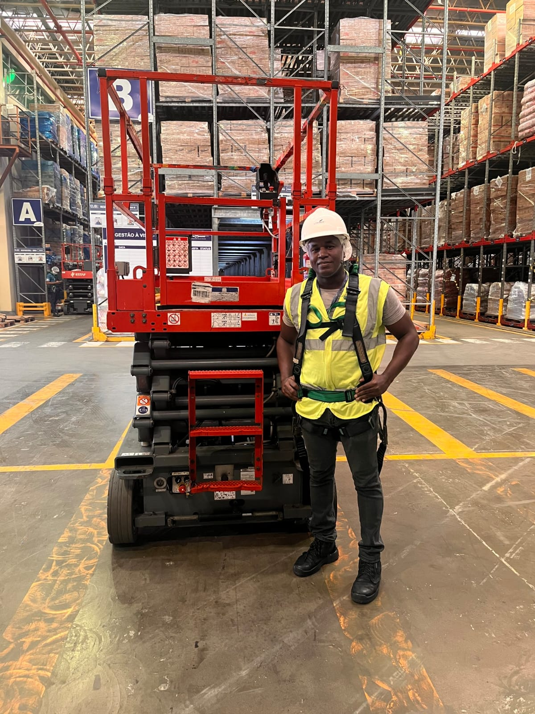

Galeria

Foto 1
Foto 2
Foto 3
Foto 4
 Foto 5
Foto 5
Política de Segurança
Nossa Política de Segurança e Saúde no Trabalho é guiada pelos seguintes princípios:
- Prevenir acidentes, incidentes e doenças ocupacionais;
- Cumprir integralmente a legislação e as Normas Regulamentadoras;
- Identificar, avaliar e controlar os riscos;
- Garantir o uso adequado de EPIs e EPCs;
- Capacitar continuamente os colaboradores;
- Incentivar a participação de todos na prevenção;
- Comunicar e investigar incidentes;
- Assegurar a preparação para emergências;
- Promover a melhoria contínua;
- Fortalecer uma cultura de segurança baseada no respeito à vida.
Regras e Boas Práticas de Segurança
Para garantir um ambiente seguro, todos devem seguir:
- Uso obrigatório de EPIs;
- Cumprimento dos POPs;
- Respeito à sinalização de segurança;
- Comunicação de atos e condições inseguras;
- Comunicação de incidentes e quase acidentes;
- Operação de máquinas somente com autorização;
- Organização e limpeza (5S);
- Proibição de remover dispositivos de segurança;
- Cumprimento de bloqueio e etiquetagem (LOTO);
- Participação em treinamentos e DDS;
Saúde Ocupacional
Promovemos ações voltadas à preservação da saúde:
- Prevenção de doenças ocupacionais;
- Uso correto de EPIs;
- Ergonomia no ambiente de trabalho;
- Controle de agentes físicos, químicos e biológicos;
- Realização de exames ocupacionais;
- Promoção da saúde e qualidade de vida;
- Comunicação de sintomas relacionados ao trabalho;
- Cumprimento do PCMSO e PGR;
- Monitoramento da saúde dos colaboradores;
- Capacitação em saúde ocupacional;
Gestão de Riscos e Emergências
Planos estruturados para prevenção e resposta:
- Identificação de perigos e avaliação de riscos;
- Implementação de medidas de controle;
- Inspeções periódicas de segurança;
- Análise e investigação de incidentes;
- Plano de resposta a emergências;
- Treinamento da brigada de emergência;
- Simulados de emergência;
- Inspeção de equipamentos de emergência;
- Comunicação em situações de emergência;
- Melhoria contínua na gestão de riscos;
Responsabilidade de Todos
A segurança é um compromisso coletivo:
- Cumprir normas e procedimentos de segurança;
- Utilizar corretamente EPIs e EPCs;
- Identificar e comunicar riscos;
- Zelar pela própria segurança e dos colegas;
- Participar de treinamentos e DDS;
- Seguir os POPs;
- Comunicar incidentes imediatamente;
- Interromper atividades em caso de risco grave;
- Contribuir para a melhoria contínua;
- Promover cultura de prevenção e responsabilidade.